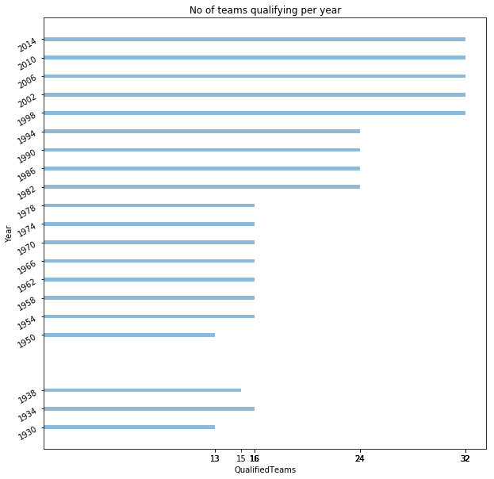

Adding Modules¶
import pandas as pd
import numpy as np
import matplotlib.pyplot as plt
Adding Datasets¶
matches = pd.read_csv('WorldCupMatches.csv')
cups = pd.read_csv('WorldCups.csv')
#matches.dropna()
final_matches = matches[matches['Stage'] == 'Final']
#final_matches
Home Field Adventage (Top Four)¶
Here I look at if being the host country increases or decreases the likelyhood of getting to the top four. I also look at if being the home team increases your chances of winning a match. Finally, I find out how the host country changes over time and how being a host country changes.
First, I create a variable that has the columns I will need:
country: which country is the host country
winner - fourth: which country got that place in that world cup
finalCompared = cups[['Country','Winner','Runners-Up','Third','Fourth']]
Here I create a boolean column that will say true if the host country is in the final four and false if not.
finalCompared['homeShowUp'] = ((finalCompared['Country'] == finalCompared['Winner']) | (finalCompared['Country'] == finalCompared['Runners-Up']) | (finalCompared['Country'] == finalCompared['Third']) | (finalCompared['Country'] == finalCompared['Fourth']) )
/usr/local/lib/python3.5/site-packages/ipykernel_launcher.py:1: SettingWithCopyWarning:
A value is trying to be set on a copy of a slice from a DataFrame.
Try using .loc[row_indexer,col_indexer] = value instead
See the caveats in the documentation: http://pandas.pydata.org/pandas-docs/stable/indexing.html#indexing-view-versus-copy
"""Entry point for launching an IPython kernel.
finalCompared
| Country | Winner | Runners-Up | Third | Fourth | homeShowUp | |
|---|---|---|---|---|---|---|
| 0 | Uruguay | Uruguay | Argentina | USA | Yugoslavia | True |
| 1 | Italy | Italy | Czechoslovakia | Germany | Austria | True |
| 2 | France | Italy | Hungary | Brazil | Sweden | False |
| 3 | Brazil | Uruguay | Brazil | Sweden | Spain | True |
| 4 | Switzerland | Germany FR | Hungary | Austria | Uruguay | False |
| 5 | Sweden | Brazil | Sweden | France | Germany FR | True |
| 6 | Chile | Brazil | Czechoslovakia | Chile | Yugoslavia | True |
| 7 | England | England | Germany FR | Portugal | Soviet Union | True |
| 8 | Mexico | Brazil | Italy | Germany FR | Uruguay | False |
| 9 | Germany | Germany FR | Netherlands | Poland | Brazil | False |
| 10 | Argentina | Argentina | Netherlands | Brazil | Italy | True |
| 11 | Spain | Italy | Germany FR | Poland | France | False |
| 12 | Mexico | Argentina | Germany FR | France | Belgium | False |
| 13 | Italy | Germany FR | Argentina | Italy | England | True |
| 14 | USA | Brazil | Italy | Sweden | Bulgaria | False |
| 15 | France | France | Brazil | Croatia | Netherlands | True |
| 16 | Korea/Japan | Brazil | Germany | Turkey | Korea Republic | False |
| 17 | Germany | Italy | France | Germany | Portugal | True |
| 18 | South Africa | Spain | Netherlands | Germany | Uruguay | False |
| 19 | Brazil | Germany | Argentina | Netherlands | Brazil | True |
Next, I create a histogram of the boolean values.
plt.hist(finalCompared.homeShowUp,align='mid',bins=[0,0.33,0.5,0.66,1])
plt.ylabel('count')
plt.xlabel('Whether they made it to the top 4 (0 = False, 1 = True)')
plt.title('Whether or not the Home Country\'s team made it into the top four' )
plt.show()

Analysis of Home field vs top four finish¶
From just this graph, it doesn’t seem like there is much evidence to conclude that meaning the host country means you will be in the semi-finals. While the true bar is slightly higher, it’s not enough to conclude any difference. What this graph is used for a start into some more interesting graphs comparing all matches to host country, which starts to get more interesting.
Home Field Adventage (Host Country)¶
While it seems like there isn’t a greater chance of you winning the entire cup if you are the host country, but what about each match? This next section looks at how the host country has done in each match over time, and how host field adventage has decreased as time went on.
Matchesjoin is a dataframe of two datasets, a dataset of each match, and a dataset of each world cup as a whole. So the last few columns repeat for each match that was in that specific world cup.
matchesJoin = matches.set_index(['Year']).join(cups.drop(['Attendance'],axis = 1).set_index(['Year']))
#matchesJoin.head()
I then decided to say this dataframe as a csv just so that I share it with my partner.
f = open('test.csv','w')
f.write(matchesJoin.to_csv())
326412
matchesJoin = pd.read_csv('test.csv')
matchesJoin = matchesJoin.dropna()
#matchesJoin
This section is my attempt to create a column that has whither or not a team’s name was in the “Win Condition” column with no luck. In the interest of time and sanity, I did decided to use excel to create this column and created a new file called tabdata.txt. I’m fairly certain that there is a way to do this in pandas, in fact I know ther is, I just can’t find it at the moment. If that changes or I decided to ask Kent about it, I’ll put the pandas code here. But for now, I’m using tabdata.txt
#matchesJoin['specialHomeWin'] = any(x in str(matchesJoin['Home Team Name']) for x in str('Win conditions').split())
#matchesJoin = matchesJoin.drop(['SpecialHomeWin'],axis=1)
#matchesJoin['homeWin'] = matchesJoin['Home Team Goals'] > matchesJoin['Away Team Goals']
matchesJoin = pd.read_csv('tabdata.txt', sep="\t")
#matchesJoin
Once I’ve got a column that says whither the team won with a special condition or not. The next step was to create a column called home win. This boolean column would be true if the hom team won, and false if the home team lost.
matchesJoin['Home Win'] = (matchesJoin['Home Team Goals'] > matchesJoin['Away Team Goals']) | (matchesJoin['Special Win Home'] == True)
I added a column called “isHome” which is another boolean column but this time says true if the host team was in that match, and false if they weren’t.
matchesJoin['isHome'] = (matchesJoin['Home Team Name'] == matchesJoin['Country']) | (matchesJoin['Away Team Name'] == matchesJoin['Country'])
matchesJoin[['Home Team Goals', 'Away Team Goals','Special Win Home','Special Win Away','Home Win']]
| Home Team Goals | Away Team Goals | Special Win Home | Special Win Away | Home Win | |
|---|---|---|---|---|---|
| 0 | 4 | 1 | False | False | True |
| 1 | 3 | 0 | False | False | True |
| 2 | 2 | 1 | False | False | True |
| 3 | 3 | 1 | False | False | True |
| 4 | 1 | 0 | False | False | True |
| 5 | 3 | 0 | False | False | True |
| 6 | 4 | 0 | False | False | True |
| 7 | 3 | 0 | False | False | True |
| 8 | 1 | 0 | False | False | True |
| 9 | 1 | 0 | False | False | True |
| 10 | 6 | 3 | False | False | True |
| 11 | 4 | 0 | False | False | True |
| 12 | 1 | 0 | False | False | True |
| 13 | 4 | 0 | False | False | True |
| 14 | 3 | 1 | False | False | True |
| 15 | 6 | 1 | False | False | True |
| 16 | 6 | 1 | False | False | True |
| 17 | 4 | 2 | False | False | True |
| 18 | 3 | 2 | True | False | True |
| 19 | 4 | 2 | False | False | True |
| 20 | 3 | 2 | False | False | True |
| 21 | 3 | 2 | False | False | True |
| 22 | 5 | 2 | False | False | True |
| 23 | 3 | 1 | False | False | True |
| 24 | 7 | 1 | False | False | True |
| 25 | 2 | 1 | False | False | True |
| 26 | 3 | 2 | False | False | True |
| 27 | 2 | 1 | False | False | True |
| 28 | 1 | 1 | False | False | False |
| 29 | 2 | 1 | False | False | True |
| ... | ... | ... | ... | ... | ... |
| 822 | 2 | 0 | False | False | True |
| 823 | 2 | 1 | True | False | True |
| 824 | 2 | 1 | False | False | True |
| 825 | 0 | 1 | False | False | False |
| 826 | 1 | 7 | False | False | False |
| 827 | 0 | 3 | False | False | False |
| 828 | 1 | 0 | True | False | True |
| 829 | 0 | 0 | False | True | False |
| 830 | 0 | 0 | True | False | True |
| 831 | 1 | 0 | False | False | True |
| 832 | 2 | 1 | False | False | True |
| 833 | 1 | 1 | True | False | True |
| 834 | 1 | 0 | True | False | True |
| 835 | 2 | 1 | True | False | True |
| 836 | 1 | 1 | True | False | True |
| 837 | 2 | 0 | False | False | True |
| 838 | 2 | 1 | False | False | True |
| 839 | 1 | 1 | True | False | True |
| 840 | 2 | 0 | False | False | True |
| 841 | 2 | 1 | True | False | True |
| 842 | 1 | 0 | True | False | True |
| 843 | 2 | 1 | True | False | True |
| 844 | 0 | 1 | False | False | False |
| 845 | 2 | 1 | False | False | True |
| 846 | 1 | 0 | False | False | True |
| 847 | 0 | 0 | True | False | True |
| 848 | 1 | 7 | False | False | False |
| 849 | 0 | 0 | False | True | False |
| 850 | 0 | 3 | False | False | False |
| 851 | 1 | 0 | True | False | True |
852 rows × 5 columns
Next I created a new dataframe that had all time the host team was in a match. This dataframe will come in handy for the next part. But for now, all I need is the matches the host country played. So the dataframe hostMatch dataframe has all games that the host country participanted in.
home = matchesJoin[(matchesJoin['isHome'] == True)]
hostMatch = home[((home['Home Team Name'] == home['Country']) & (home['Home Win'] == True))|((home['Away Team Name'] == home['Country']) & (home['Home Win'] == False))]
hostMatch[['Home Team Name','Home Team Goals','Away Team Goals','Away Team Name','Home Win','Country']]
| Home Team Name | Home Team Goals | Away Team Goals | Away Team Name | Home Win | Country | |
|---|---|---|---|---|---|---|
| 8 | Uruguay | 1 | 0 | Peru | True | Uruguay |
| 13 | Uruguay | 4 | 0 | Romania | True | Uruguay |
| 16 | Uruguay | 6 | 1 | Yugoslavia | True | Uruguay |
| 17 | Uruguay | 4 | 2 | Argentina | True | Uruguay |
| 24 | Italy | 7 | 1 | USA | True | Italy |
| 30 | Italy | 1 | 0 | Spain | True | Italy |
| 31 | Italy | 1 | 0 | Austria | True | Italy |
| 34 | Italy | 2 | 1 | Czechoslovakia | True | Italy |
| 37 | France | 3 | 1 | Belgium | True | France |
| 53 | Brazil | 4 | 0 | Mexico | True | Brazil |
| 63 | Brazil | 2 | 0 | Yugoslavia | True | Brazil |
| 70 | Brazil | 7 | 1 | Sweden | True | Brazil |
| 71 | Brazil | 6 | 1 | Spain | True | Brazil |
| 82 | Switzerland | 2 | 1 | Italy | True | Switzerland |
| 92 | Switzerland | 4 | 1 | Italy | True | Switzerland |
| 101 | Sweden | 3 | 0 | Mexico | True | Sweden |
| 116 | Sweden | 2 | 1 | Hungary | True | Sweden |
| 130 | Sweden | 2 | 0 | Soviet Union | True | Sweden |
| 132 | Sweden | 3 | 1 | Germany FR | True | Sweden |
| 139 | Chile | 3 | 1 | Switzerland | True | Chile |
| 147 | Chile | 2 | 0 | Italy | True | Chile |
| 160 | Chile | 2 | 1 | Soviet Union | True | Chile |
| 166 | Chile | 1 | 0 | Yugoslavia | True | Chile |
| 183 | England | 2 | 0 | Mexico | True | England |
| 188 | England | 2 | 0 | France | True | England |
| 192 | England | 1 | 0 | Argentina | True | England |
| 197 | England | 2 | 1 | Portugal | True | England |
| 199 | England | 4 | 2 | Germany FR | True | England |
| 215 | Mexico | 4 | 0 | El Salvador | True | Mexico |
| 223 | Mexico | 1 | 0 | Belgium | True | Mexico |
| ... | ... | ... | ... | ... | ... | ... |
| 367 | Belgium | 1 | 2 | Mexico | False | Mexico |
| 389 | Iraq | 0 | 1 | Mexico | False | Mexico |
| 397 | Mexico | 2 | 0 | Bulgaria | True | Mexico |
| 415 | Italy | 1 | 0 | Austria | True | Italy |
| 427 | Italy | 1 | 0 | USA | True | Italy |
| 440 | Italy | 2 | 0 | Czechoslovakia | True | Italy |
| 453 | Italy | 2 | 0 | Uruguay | True | Italy |
| 457 | Italy | 1 | 0 | rn">Republic of Ireland | True | Italy |
| 462 | Italy | 2 | 1 | England | True | Italy |
| 478 | USA | 2 | 1 | Colombia | True | USA |
| 522 | France | 3 | 0 | South Africa | True | France |
| 537 | France | 4 | 0 | Saudi Arabia | True | France |
| 552 | France | 2 | 1 | Denmark | True | France |
| 566 | France | 1 | 0 | Paraguay | True | France |
| 572 | Italy | 0 | 0 | France | False | France |
| 577 | France | 2 | 1 | Croatia | True | France |
| 579 | Brazil | 0 | 3 | France | False | France |
| 644 | Germany | 4 | 2 | Costa Rica | True | Germany |
| 660 | Germany | 1 | 0 | Poland | True | Germany |
| 676 | Ecuador | 0 | 3 | Germany | False | Germany |
| 692 | Germany | 2 | 0 | Sweden | True | Germany |
| 700 | Germany | 1 | 1 | Argentina | True | Germany |
| 706 | Germany | 3 | 1 | Portugal | True | Germany |
| 741 | France | 1 | 2 | South Africa | False | South Africa |
| 772 | Brazil | 3 | 1 | Croatia | True | Brazil |
| 806 | Cameroon | 1 | 4 | Brazil | False | Brazil |
| 820 | Brazil | 1 | 1 | Chile | True | Brazil |
| 824 | Brazil | 2 | 1 | Colombia | True | Brazil |
| 836 | Brazil | 1 | 1 | Chile | True | Brazil |
| 845 | Brazil | 2 | 1 | Colombia | True | Brazil |
66 rows × 6 columns
Here we have the first “new” dataframe that was created. what I mean is, this is the first dataframe that doesn’t just get a subset of the orginal dataframe. homeWinGroup is a groupby dataframe that counts the amount of times the host country won by Year, that way we can visuilze the change in host country wins over time. the next three columns added “total”,”lost”,and “ratio” are pretty self-explanitory, but I’m going to explain them anyway.
Total is the number of games the host country played
lost is the number they lost
ratio is the ratio of total wins over total games.
homeWinGroup= hostMatch[['Home Win','Year']].groupby('Year').count()
homeWinGroup['Total']= matchesJoin[(matchesJoin['isHome'] == True)][['isHome','Year']].groupby('Year').count()
homeWinGroup['Lost'] = homeWinGroup['Total'] - homeWinGroup['Home Win']
homeWinGroup['Ratio'] = homeWinGroup['Home Win']/homeWinGroup['Total']
homeWinGroup
| Home Win | Total | Lost | Ratio | |
|---|---|---|---|---|
| Year | ||||
| 1930 | 4 | 4 | 0 | 1.000000 |
| 1934 | 4 | 5 | 1 | 0.800000 |
| 1938 | 1 | 2 | 1 | 0.500000 |
| 1950 | 4 | 6 | 2 | 0.666667 |
| 1954 | 2 | 4 | 2 | 0.500000 |
| 1958 | 4 | 6 | 2 | 0.666667 |
| 1962 | 4 | 6 | 2 | 0.666667 |
| 1966 | 5 | 6 | 1 | 0.833333 |
| 1970 | 2 | 4 | 2 | 0.500000 |
| 1978 | 5 | 7 | 2 | 0.714286 |
| 1982 | 1 | 5 | 4 | 0.200000 |
| 1986 | 3 | 5 | 2 | 0.600000 |
| 1990 | 6 | 7 | 1 | 0.857143 |
| 1994 | 1 | 4 | 3 | 0.250000 |
| 1998 | 7 | 7 | 0 | 1.000000 |
| 2006 | 6 | 7 | 1 | 0.857143 |
| 2010 | 1 | 3 | 2 | 0.333333 |
| 2014 | 6 | 11 | 5 | 0.545455 |
Finally, I create three graphs. the first one show the total number of wins by a host country over time. The second shows the percent of wins of a host country over time. And finally, the last graph shows how often a host country will get a certain percet of won matches.
homeWinGroup.reset_index(inplace=True)
plt.figure(figsize=(20,5))
plt.subplot('131')
plt.scatter('Year','Home Win',data=homeWinGroup)
plt.ylabel('Number of Host Wins')
plt.xlabel('Year')
plt.title('Number of Total Host Wins each Year')
plt.subplot('132')
plt.scatter('Year','Ratio',data=homeWinGroup)
plt.ylabel('Percent of Games Won')
plt.xlabel('Year')
plt.title('The Percent of Games that a Host team won each Year' )
plt.subplot('133')
plt.hist('Ratio',data=homeWinGroup,bins=[0.5, 0.55,0.6, 0.65,0.7, 0.75,0.8, 0.85, 0.9,0.95,1])
plt.ylabel('Number Of Percents')
plt.xlabel('Percent of Games Won')
plt.title('How Often does a host team get a specific Percent of wins' )
plt.text(0.78, 2.5, r'Mean = 0.6', fontsize=15)
plt.show()

homeWinGroup.describe()
| Year | Home Win | Total | Lost | Ratio | |
|---|---|---|---|---|---|
| count | 18.000000 | 18.000000 | 18.000000 | 18.000000 | 18.000000 |
| mean | 1973.333333 | 3.666667 | 5.500000 | 1.833333 | 0.638372 |
| std | 26.184863 | 1.970369 | 2.007339 | 1.248529 | 0.234291 |
| min | 1930.000000 | 1.000000 | 2.000000 | 0.000000 | 0.200000 |
| 25% | 1955.000000 | 2.000000 | 4.000000 | 1.000000 | 0.500000 |
| 50% | 1974.000000 | 4.000000 | 5.500000 | 2.000000 | 0.666667 |
| 75% | 1993.000000 | 5.000000 | 6.750000 | 2.000000 | 0.825000 |
| max | 2014.000000 | 7.000000 | 11.000000 | 5.000000 | 1.000000 |
Analysis of Host Team Advantage¶
from these three graphs, it’s clear that there isn’t much of an increase of whither or not a time will win a match if they are the host country, over time and in general. We can see this from the fact that there is no clear linear pattern or any pattern with either of the two scatter graphs. However, while the mean ratio of wins for a host country is over 50% say that on average, the host team has a greater then 50% chance of winning. I would agrue that this increase isn’t enough for there to be any significant evidence that being the host country makes you more likely to win a match. More then likely, the match would have been won regardless of there host status. One thing to note, however, is the slight inversion of the total vs year compared to ratio vs year. This will be shown off in more detail in the next graphs.
Home Field Advantage (General)¶
Now that we have graphs on whither or not a host time has won a match, it’s clear that the next step should be to answer the question, does being the “home team” in a match increase your chances of winning? does this change over time?
So here I create a new groupby dataframe called homeTeamWin. I then create a few columns which are similar to homeWinGroupbut instead have all matches played each world cup rather then just the host countries games.
homeTeamWin= matchesJoin[['Home Win','Year']].groupby('Year').count()
homeTeamWin['Total'] = matchesJoin[['Home Win','Year']].groupby('Year').count()
homeTeamWin.drop(['Home Win'],axis=1,inplace=True)
homeTeamWin['Won'] = matchesJoin[matchesJoin['Home Win'] == True][['Home Win','Year']].groupby('Year').count()
homeTeamWin['Lost'] = homeTeamWin['Total'] - homeTeamWin['Won']
homeTeamWin['Ratio'] = homeTeamWin['Won']/homeTeamWin['Total']
homeTeamWin.reset_index(inplace=True)
homeTeamWin
| Year | Total | Won | Lost | Ratio | |
|---|---|---|---|---|---|
| 0 | 1930 | 18 | 18 | 0 | 1.000000 |
| 1 | 1934 | 17 | 16 | 1 | 0.941176 |
| 2 | 1938 | 18 | 15 | 3 | 0.833333 |
| 3 | 1950 | 22 | 19 | 3 | 0.863636 |
| 4 | 1954 | 26 | 24 | 2 | 0.923077 |
| 5 | 1958 | 35 | 24 | 11 | 0.685714 |
| 6 | 1962 | 32 | 27 | 5 | 0.843750 |
| 7 | 1966 | 32 | 27 | 5 | 0.843750 |
| 8 | 1970 | 32 | 27 | 5 | 0.843750 |
| 9 | 1974 | 38 | 15 | 23 | 0.394737 |
| 10 | 1978 | 38 | 29 | 9 | 0.763158 |
| 11 | 1982 | 52 | 26 | 26 | 0.500000 |
| 12 | 1986 | 52 | 22 | 30 | 0.423077 |
| 13 | 1990 | 52 | 27 | 25 | 0.519231 |
| 14 | 1994 | 52 | 27 | 25 | 0.519231 |
| 15 | 1998 | 64 | 30 | 34 | 0.468750 |
| 16 | 2002 | 64 | 28 | 36 | 0.437500 |
| 17 | 2006 | 64 | 34 | 30 | 0.531250 |
| 18 | 2010 | 64 | 25 | 39 | 0.390625 |
| 19 | 2014 | 80 | 43 | 37 | 0.537500 |
I then create three graphs which are the same as before
plt.figure(figsize=(15,5))
plt.subplot('131')
plt.scatter('Year','Won',data=homeTeamWin)
plt.ylabel('Number of Home Wins')
plt.xlabel('Year')
plt.title('Number of Total Home Wins each Year')
plt.subplot('132')
plt.scatter('Year','Ratio',data=homeTeamWin)
plt.ylabel('Percent of Home Wins')
plt.xlabel('Year')
plt.title('Percent of Home Wins each Year')
plt.text(1960, .9, r'Mean = 0.864 SD = 0.088 before 1970', fontsize=8)
plt.text(1930, .55, r'Mean = 0.498 SD = 0.103 after 1970', fontsize=8)
plt.annotate("1970",xy=(1970,.84),xytext=(1970, .6),arrowprops=dict(facecolor='black', shrink=0.05),)
plt.subplot('133')
plt.hist('Ratio',data=homeTeamWin,rwidth=0.5,bins=[0.4, 0.45,0.5, 0.55,0.6, 0.65,0.7, 0.75,0.8, 0.85, 0.9,0.95,1])
plt.ylabel('Number of Percent of Home Wins')
plt.xlabel('Percent of Home Wins')
plt.title('Histogram of Percents')
plt.text(0.575, 3, r'Mean = 0.66', fontsize=13)
plt.show()

print(homeTeamWin[homeTeamWin['Year'] <= 1970].describe())
print(homeTeamWin.describe())
homeTeamWin[homeTeamWin['Year'] > 1970].describe()
Year Total Won Lost Ratio
count 9.000000 9.000000 9.000000 9.000000 9.000000
mean 1951.333333 25.777778 21.888889 3.888889 0.864243
std 14.422205 7.189885 4.910307 3.218868 0.087962
min 1930.000000 17.000000 15.000000 0.000000 0.685714
25% 1938.000000 18.000000 18.000000 2.000000 0.843750
50% 1954.000000 26.000000 24.000000 3.000000 0.843750
75% 1962.000000 32.000000 27.000000 5.000000 0.923077
max 1970.000000 35.000000 27.000000 11.000000 1.000000
Year Total Won Lost Ratio
count 20.000000 20.000000 20.000000 20.000000 20.000000
mean 1974.800000 42.600000 25.150000 17.450000 0.663162
std 25.582889 18.619175 6.698586 14.155062 0.208974
min 1930.000000 17.000000 15.000000 0.000000 0.390625
25% 1957.000000 30.500000 21.250000 4.500000 0.492188
50% 1976.000000 38.000000 26.500000 17.000000 0.611607
75% 1995.000000 55.000000 27.250000 30.000000 0.843750
max 2014.000000 80.000000 43.000000 39.000000 1.000000
| Year | Total | Won | Lost | Ratio | |
|---|---|---|---|---|---|
| count | 11.000000 | 11.000000 | 11.000000 | 11.000000 | 11.000000 |
| mean | 1994.000000 | 56.363636 | 27.818182 | 28.545455 | 0.498642 |
| std | 13.266499 | 12.419925 | 6.968761 | 8.454154 | 0.103052 |
| min | 1974.000000 | 38.000000 | 15.000000 | 9.000000 | 0.390625 |
| 25% | 1984.000000 | 52.000000 | 25.500000 | 25.000000 | 0.430288 |
| 50% | 1994.000000 | 52.000000 | 27.000000 | 30.000000 | 0.500000 |
| 75% | 2004.000000 | 64.000000 | 29.500000 | 35.000000 | 0.525240 |
| max | 2014.000000 | 80.000000 | 43.000000 | 39.000000 | 0.763158 |
Analysis of Home Team Advantage (General)¶
From the three graphs, it’s clear that there was a one point a very signficant home field advantage. It seems that before 1970, if you were the home team, you were almost certain to win. And with a standerd deveation of 0.087, 50% is clearly not close to the mean. However, after 1970, the mean ratio of wins is closer to 50% being within one standerd deviation, making it clearly close to 50%. So this means that at one point, there was a significant chance of winning if you were the home team. But now a days, it is more random. Also from the first graph, you can see a postive linear slope that shows that as time went on, more matches were played.
totalWins = finalCompared[['Winner','Country']].groupby('Winner').count()
totalWins.loc['Germany'] = 4
totalWins.drop('Germany FR', axis=0 ,inplace=True)
totalWins.reset_index(inplace=True)
plt.bar('Winner','Country',data=totalWins)
plt.xticks(rotation=90)
plt.ylabel('Number of First Places')
plt.xlabel('Country')
plt.title('Bar Graph of Total Winners')
plt.show()

matchesJoin.loc[matchesJoin['Home Win'] == True, 'Winner Country'] = matchesJoin['Home Team Name']
matchesJoin.loc[matchesJoin['Home Win'] == False, 'Winner Country'] = matchesJoin['Away Team Name']
matchesJoin['Winner Country']
0 France
1 USA
2 Yugoslavia
3 Romania
4 Argentina
5 Chile
6 Yugoslavia
7 USA
8 Uruguay
9 Chile
10 Argentina
11 Brazil
12 Paraguay
13 Uruguay
14 Argentina
15 Argentina
16 Uruguay
17 Uruguay
18 Austria
19 Hungary
20 Switzerland
21 Sweden
22 Germany
23 Spain
24 Italy
25 Czechoslovakia
26 Czechoslovakia
27 Germany
28 Spain
29 Austria
...
822 France
823 Germany
824 Brazil
825 Germany
826 Germany
827 Netherlands
828 Germany
829 Argentina
830 Netherlands
831 Argentina
832 Netherlands
833 Costa Rica
834 Argentina
835 Belgium
836 Brazil
837 Colombia
838 Netherlands
839 Costa Rica
840 France
841 Germany
842 Argentina
843 Belgium
844 Germany
845 Brazil
846 Argentina
847 Netherlands
848 Germany
849 Argentina
850 Netherlands
851 Germany
Name: Winner Country, Length: 852, dtype: object
totalMatchWins = matchesJoin[['Winner Country','Country']].groupby('Winner Country').count()
totalMatchWins.reset_index(inplace=True)
totalMatchWins
| Winner Country | Country | |
|---|---|---|
| 0 | Algeria | 4 |
| 1 | Angola | 2 |
| 2 | Argentina | 54 |
| 3 | Australia | 4 |
| 4 | Austria | 15 |
| 5 | Belgium | 21 |
| 6 | Bolivia | 1 |
| 7 | Brazil | 79 |
| 8 | Bulgaria | 8 |
| 9 | Cameroon | 9 |
| 10 | Chile | 14 |
| 11 | Colombia | 10 |
| 12 | Costa Rica | 7 |
| 13 | Croatia | 8 |
| 14 | Cuba | 1 |
| 15 | Czech Republic | 1 |
| 16 | Czechoslovakia | 15 |
| 17 | C�te d'Ivoire | 3 |
| 18 | Denmark | 9 |
| 19 | Ecuador | 4 |
| 20 | Egypt | 2 |
| 21 | England | 34 |
| 22 | France | 34 |
| 23 | German DR | 4 |
| 24 | Germany | 36 |
| 25 | Germany FR | 38 |
| 26 | Ghana | 5 |
| 27 | Greece | 3 |
| 28 | Honduras | 2 |
| 29 | Hungary | 16 |
| ... | ... | ... |
| 42 | New Zealand | 2 |
| 43 | Nigeria | 6 |
| 44 | Northern Ireland | 8 |
| 45 | Norway | 5 |
| 46 | Paraguay | 12 |
| 47 | Peru | 6 |
| 48 | Poland | 18 |
| 49 | Portugal | 16 |
| 50 | Romania | 11 |
| 51 | Russia | 3 |
| 52 | Saudi Arabia | 4 |
| 53 | Scotland | 6 |
| 54 | Senegal | 3 |
| 55 | Serbia | 1 |
| 56 | Slovakia | 2 |
| 57 | Slovenia | 1 |
| 58 | South Africa | 3 |
| 59 | Soviet Union | 18 |
| 60 | Spain | 35 |
| 61 | Sweden | 22 |
| 62 | Switzerland | 14 |
| 63 | Tunisia | 3 |
| 64 | Turkey | 6 |
| 65 | USA | 12 |
| 66 | Ukraine | 3 |
| 67 | Uruguay | 26 |
| 68 | Wales | 4 |
| 69 | Yugoslavia | 21 |
| 70 | rn">Bosnia and Herzegovina | 1 |
| 71 | rn">Republic of Ireland | 4 |
72 rows × 2 columns
plt.figure(figsize = (25,10))
plt.bar('Winner Country','Country',data=totalMatchWins)
plt.xticks(rotation=90)
plt.ylabel('Number of matches won')
plt.xlabel('Country')
plt.title('Matches a Country has Won')
plt.show()

from ipywidgets import interact #interactive, fixed, interact_manual
import ipywidgets as widgets
totalMatchesWonByYear = matchesJoin[['Winner Country','Country','Year']].groupby(['Year','Winner Country']).count()
totalMatchesWonByYear.reset_index(inplace=True)
def f(x):
currentBar = plt.bar('Winner Country','Country',data=totalMatchesWonByYear[totalMatchesWonByYear['Year'] == x])
plt.ylim(0,10)
plt.xticks(rotation=90)
plt.ylabel('Number of Matches Won')
plt.xlabel('Country')
plt.title('Number of Matches Won in ' + str(x))
interact(f,x=(1930,2015,4))
Failed to display Jupyter Widget of type interactive.
If you're reading this message in the Jupyter Notebook or JupyterLab Notebook, it may mean that the widgets JavaScript is still loading. If this message persists, it likely means that the widgets JavaScript library is either not installed or not enabled. See the Jupyter Widgets Documentation for setup instructions.
If you're reading this message in another frontend (for example, a static rendering on GitHub or NBViewer), it may mean that your frontend doesn't currently support widgets.
<function __main__.f(x)>
matchesJoin.columns
Index(['Year', 'Datetime', 'Stage', 'Stadium', 'City', 'Home Team Name',
'Home Team Goals', 'Away Team Goals', 'Away Team Name',
'Win conditions', 'Attendance', 'Half-time Home Goals',
'Half-time Away Goals', 'Referee', 'Assistant 1', 'Assistant 2',
'RoundID', 'MatchID', 'Home Team Initials', 'Away Team Initials',
'Country', 'Winner', 'Runners-Up', 'Third', 'Fourth', 'GoalsScored',
'QualifiedTeams', 'MatchesPlayed', 'isHome', 'Special Win Home',
'Special Win Away', 'Home Win', 'Winner Country'],
dtype='object')
matchesJoin['TotalScore'] = matchesJoin['Away Team Goals'] + matchesJoin['Home Team Goals']
groupByScore = matchesJoin[['TotalScore','Year']].groupby(['Year']).sum()
groupByScore['TotalGames'] = matchesJoin[['Year','Winner Country']].groupby(['Year']).count()
groupByScore['ScoresPerGame'] = groupByScore['TotalScore']/groupByScore['TotalGames']
groupByScore['AverageAttendence'] = matchesJoin[['Year','Attendance']].groupby(['Year']).sum()
groupByScore['AverageAttendence'] = groupByScore['AverageAttendence']/groupByScore['TotalGames']
groupByScore.reset_index(inplace=True)
groupByScore
| Year | TotalScore | TotalGames | ScoresPerGame | AverageAttendence | |
|---|---|---|---|---|---|
| 0 | 1930 | 70 | 18 | 3.888889 | 32808.277778 |
| 1 | 1934 | 70 | 17 | 4.117647 | 21352.941176 |
| 2 | 1938 | 84 | 18 | 4.666667 | 20872.222222 |
| 3 | 1950 | 88 | 22 | 4.000000 | 47511.181818 |
| 4 | 1954 | 140 | 26 | 5.384615 | 29561.807692 |
| 5 | 1958 | 126 | 35 | 3.600000 | 23423.142857 |
| 6 | 1962 | 89 | 32 | 2.781250 | 27911.625000 |
| 7 | 1966 | 89 | 32 | 2.781250 | 48847.968750 |
| 8 | 1970 | 95 | 32 | 2.968750 | 50124.218750 |
| 9 | 1974 | 97 | 38 | 2.552632 | 49098.763158 |
| 10 | 1978 | 102 | 38 | 2.684211 | 40678.710526 |
| 11 | 1982 | 146 | 52 | 2.807692 | 40571.596154 |
| 12 | 1986 | 132 | 52 | 2.538462 | 46039.057692 |
| 13 | 1990 | 115 | 52 | 2.211538 | 48388.750000 |
| 14 | 1994 | 141 | 52 | 2.711538 | 68991.115385 |
| 15 | 1998 | 171 | 64 | 2.671875 | 43517.187500 |
| 16 | 2002 | 161 | 64 | 2.515625 | 42268.703125 |
| 17 | 2006 | 147 | 64 | 2.296875 | 52491.234375 |
| 18 | 2010 | 145 | 64 | 2.265625 | 49669.625000 |
| 19 | 2014 | 206 | 80 | 2.575000 | 53990.537500 |
from sklearn.linear_model import LinearRegression
from sklearn.cross_validation import train_test_split
from numpy.polynomial.polynomial import polyfit
#test = train_test_split(groupByScore['Year'],groupByScore['TotalScore'])
#test
linreg = LinearRegression()
linreg.fit(groupByScore['Year'].reshape(-1,1),groupByScore['TotalScore'])
print(linreg.intercept_)
print(linreg.coef_)
x = np.arange(10)
y = 5 * x + 10
# Fit with polyfit
b, m = polyfit(x, y, 1)
-2209.447117858981
[1.17994081]
/usr/local/lib/python3.5/site-packages/ipykernel_launcher.py:7: FutureWarning: reshape is deprecated and will raise in a subsequent release. Please use .values.reshape(...) instead
import sys
plt.figure(figsize=(15,5))
plt.subplot('121')
plt.scatter('Year','TotalScore',data=groupByScore)
plt.annotate('1954', xy = (1954,140), xytext = (1960,160),arrowprops=dict(facecolor='black',shrink=0.05))
plt.ylabel('Number of Scores')
plt.xlabel('Year')
plt.title('Number of Scores vs. Year')
plt.subplot('122')
plt.scatter('Year','ScoresPerGame',data=groupByScore)
plt.annotate('1954', xy = (1954,5.38), xytext = (1960,5),arrowprops=dict(facecolor='black',shrink=0.05))
plt.ylabel('Number of Scores per Game')
plt.xlabel('Year')
plt.title('Number of Scores per Game vs. Year')
plt.show()
plt.figure(figsize=(20,5))
plt.subplot('131')
plt.scatter('Year','AverageAttendence',data=groupByScore)
plt.annotate('1994', xy = (1994,68990), xytext = (1980,69000),arrowprops=dict(facecolor='black',shrink=0.05))
plt.ylabel('Average Attendence per Game')
plt.xlabel('Year')
plt.title('Average Attendence per Game vs. Year')
plt.subplot('132')
plt.scatter('TotalScore','AverageAttendence',data=groupByScore)
plt.annotate('1994', xy = (141,68990), xytext = (110,69000),arrowprops=dict(facecolor='black',shrink=0.05))
plt.ylabel('Average Attendence per Game')
plt.xlabel('Total Scores')
plt.title('Average Attendence per Game vs. Total Scores that Year')
plt.subplot('133')
plt.scatter('ScoresPerGame','AverageAttendence',data=groupByScore)
plt.annotate('1994', xy = (2.7,68990), xytext = (3.5,69000),arrowprops=dict(facecolor='black',shrink=0.05))
plt.ylabel('Average Attendence per Game')
plt.xlabel('Average Score per Game')
plt.title('Average Attendence vs. Average Scores per Game')
plt.show()

matchesJoin.columns
Index(['Year', 'Datetime', 'Stage', 'Stadium', 'City', 'Home Team Name',
'Home Team Goals', 'Away Team Goals', 'Away Team Name',
'Win conditions', 'Attendance', 'Half-time Home Goals',
'Half-time Away Goals', 'Referee', 'Assistant 1', 'Assistant 2',
'RoundID', 'MatchID', 'Home Team Initials', 'Away Team Initials',
'Country', 'Winner', 'Runners-Up', 'Third', 'Fourth', 'GoalsScored',
'QualifiedTeams', 'MatchesPlayed', 'isHome', 'Special Win Home',
'Special Win Away', 'Home Win', 'Winner Country', 'TotalScore'],
dtype='object')
masterGroupbyFinalFour = pd.DataFrame()
groupByWinner = cups[['Winner','Year']].groupby('Winner').count()
groupByWinner.reset_index(inplace=True)
groupByWinner.columns = ['Country','WinnerCount']
#groupByWinner.set_index('Country',inplace=True)
groupByRunnersUp = cups[['Runners-Up','Year']].groupby('Runners-Up').count()
groupByRunnersUp.reset_index(inplace=True)
groupByRunnersUp.columns = ['Country','Runners-UpCount']
#groupByRunnersUp.set_index('Country',inplace=True)
groupByThird = cups[['Third','Year']].groupby('Third').count()
groupByThird.reset_index(inplace=True)
groupByThird.columns = ['Country','ThirdCount']
#groupByThird.set_index('Country',inplace=True)
groupByFourth = cups[['Fourth','Year']].groupby('Fourth').count()
groupByFourth.reset_index(inplace=True)
groupByFourth.columns = ['Country','FourthCount']
#groupByFourth.set_index('Country',inplace=True)
masterGroupbyFinalFour = pd.merge(groupByWinner,groupByRunnersUp,on='Country',how='outer')
masterGroupbyFinalFour = pd.merge(masterGroupbyFinalFour,groupByThird,on='Country',how='outer')
masterGroupbyFinalFour = pd.merge(masterGroupbyFinalFour,groupByFourth,on='Country',how='outer')
masterGroupbyFinalFour.set_index('Country',inplace=True)
masterGroupbyFinalFour.fillna(0,inplace=True)
masterGroupbyFinalFour
| WinnerCount | Runners-UpCount | ThirdCount | FourthCount | |
|---|---|---|---|---|
| Country | ||||
| Argentina | 2.0 | 3.0 | 0.0 | 0.0 |
| Brazil | 5.0 | 2.0 | 2.0 | 2.0 |
| England | 1.0 | 0.0 | 0.0 | 1.0 |
| France | 1.0 | 1.0 | 2.0 | 1.0 |
| Germany | 1.0 | 1.0 | 3.0 | 0.0 |
| Germany FR | 3.0 | 3.0 | 1.0 | 1.0 |
| Italy | 4.0 | 2.0 | 1.0 | 1.0 |
| Spain | 1.0 | 0.0 | 0.0 | 1.0 |
| Uruguay | 2.0 | 0.0 | 0.0 | 3.0 |
| Czechoslovakia | 0.0 | 2.0 | 0.0 | 0.0 |
| Hungary | 0.0 | 2.0 | 0.0 | 0.0 |
| Netherlands | 0.0 | 3.0 | 1.0 | 1.0 |
| Sweden | 0.0 | 1.0 | 2.0 | 1.0 |
| Austria | 0.0 | 0.0 | 1.0 | 1.0 |
| Chile | 0.0 | 0.0 | 1.0 | 0.0 |
| Croatia | 0.0 | 0.0 | 1.0 | 0.0 |
| Poland | 0.0 | 0.0 | 2.0 | 0.0 |
| Portugal | 0.0 | 0.0 | 1.0 | 1.0 |
| Turkey | 0.0 | 0.0 | 1.0 | 0.0 |
| USA | 0.0 | 0.0 | 1.0 | 0.0 |
| Belgium | 0.0 | 0.0 | 0.0 | 1.0 |
| Bulgaria | 0.0 | 0.0 | 0.0 | 1.0 |
| Korea Republic | 0.0 | 0.0 | 0.0 | 1.0 |
| Soviet Union | 0.0 | 0.0 | 0.0 | 1.0 |
| Yugoslavia | 0.0 | 0.0 | 0.0 | 2.0 |
masterGroupbyFinalFour.columns
Index(['WinnerCount', 'Runners-UpCount', 'ThirdCount', 'FourthCount'], dtype='object')
masterGroupbyFinalFour.plot.bar(stacked=True, figsize=(10,7))
#.loc[:,['WinnerCount', 'Runners-UpCount', 'ThirdCount', 'FourthCount']].plot.bar(stacked=True, figsize=(10,7))
<matplotlib.axes._subplots.AxesSubplot at 0x7f96c3cb0390>
def f (x):
masterGroupbyFinalFour = pd.DataFrame()
groupByWinner = cups[cups['Year'] <= x][['Winner','Year']].groupby('Winner').count()
groupByWinner.reset_index(inplace=True)
groupByWinner.columns = ['Country','WinnerCount']
#groupByWinner.set_index('Country',inplace=True)
groupByRunnersUp = cups[cups['Year'] <= x][['Runners-Up','Year']].groupby('Runners-Up').count()
groupByRunnersUp.reset_index(inplace=True)
groupByRunnersUp.columns = ['Country','Runners-UpCount']
#groupByRunnersUp.set_index('Country',inplace=True)
groupByThird = cups[cups['Year'] <= x][['Third','Year']].groupby('Third').count()
groupByThird.reset_index(inplace=True)
groupByThird.columns = ['Country','ThirdCount']
#groupByThird.set_index('Country',inplace=True)
groupByFourth = cups[cups['Year'] <= x][['Fourth','Year']].groupby('Fourth').count()
groupByFourth.reset_index(inplace=True)
groupByFourth.columns = ['Country','FourthCount']
#groupByFourth.set_index('Country',inplace=True)
masterGroupbyFinalFour = pd.merge(groupByWinner,groupByRunnersUp,on='Country',how='outer')
masterGroupbyFinalFour = pd.merge(masterGroupbyFinalFour,groupByThird,on='Country',how='outer')
masterGroupbyFinalFour = pd.merge(masterGroupbyFinalFour,groupByFourth,on='Country',how='outer')
masterGroupbyFinalFour.set_index('Country',inplace=True)
masterGroupbyFinalFour.fillna(0,inplace=True)
masterGroupbyFinalFour.plot.bar(stacked=True, figsize=(10,7))
#.loc[:,['WinnerCount', 'Runners-UpCount', 'ThirdCount', 'FourthCount']]
plt.title('Total Semi-Final Apperances Since ' + str(x))
interact(f,x=(1930,2015,4))
Failed to display Jupyter Widget of type interactive.
If you're reading this message in the Jupyter Notebook or JupyterLab Notebook, it may mean that the widgets JavaScript is still loading. If this message persists, it likely means that the widgets JavaScript library is either not installed or not enabled. See the Jupyter Widgets Documentation for setup instructions.
If you're reading this message in another frontend (for example, a static rendering on GitHub or NBViewer), it may mean that your frontend doesn't currently support widgets.
<function __main__.f(x)>
df = open('finalData.csv','w')
df.write(matchesJoin.to_csv())
237492
plt.figure(figsize=(10, 10))
plt.barh(cups.Year,cups.QualifiedTeams,alpha=0.5)
plt.ylabel('Year')
plt.xlabel('QualifiedTeams')
plt.yticks(cups.Year, rotation=30)
plt.xticks(cups.QualifiedTeams)
plt.title('No of teams qualifying per year')
plt.show()
